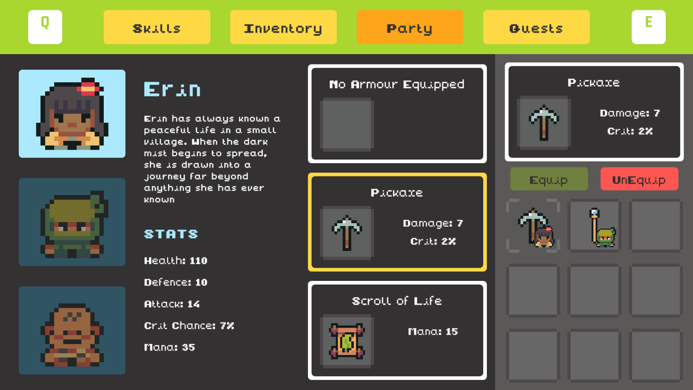
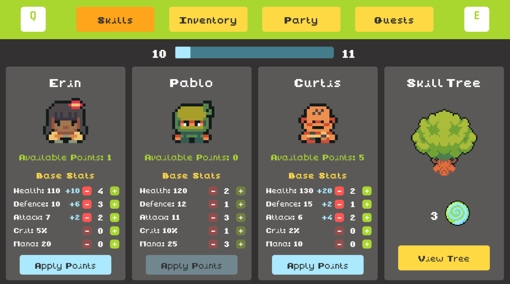
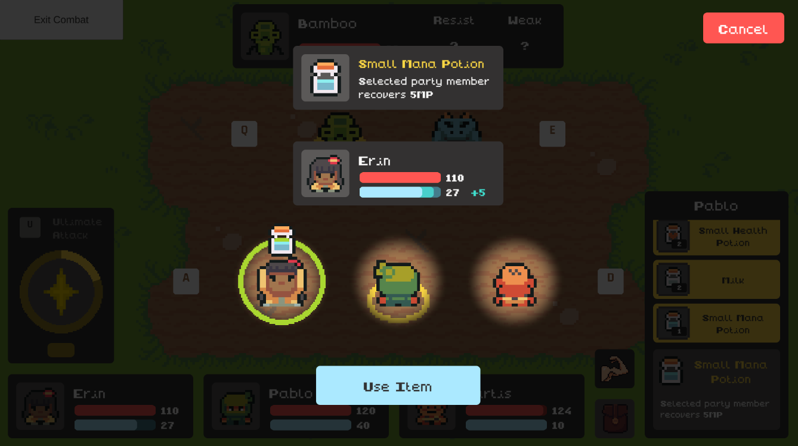
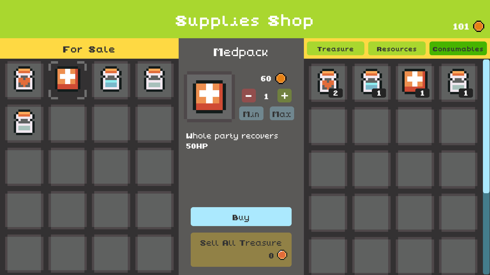

Screenshots







A 2D RPG puzzle adventure where you save the animals from corruption spreading throughout the land.
Download on Itch.io View ScreenshotsA dark mist has spread across the forest, corrupting wildlife and destabilising the land. You play as Erin, accompanied by their loyal hamster Milo, on a journey to uncover and destroy the source of the corruption.
Explore a dangerous, atmospheric world filled with ancient elemental temples, hostile creatures, and hidden paths. Progress through the world by unlocking elemental powers that allow access to new areas and stronger enemies.
The game features a dual gameplay system, combining top-down exploration and turn-based combat with side-scrolling sections where Milo can access small spaces to retrieve items and unlock progression paths. Elemental temples are generated using procedural generation, ensuring varied layouts and encounters each run, while combat is driven by a reactive AI system that adapts enemy behaviour based on player actions and battle conditions.
Your journey ultimately leads to the corrupted heart of the forest, where the evil rat Nox awaits.
Strategic battles against corrupted wildlife using reactive enemy AI.
→Every temple layout is unique, giving each run fresh exploration and challenge.
→FSM-based enemy behaviour in the world, with dedicated AI for turn-based combat.
→NPC dialogue unlocks quests, side quests, and world immersion.
→Gain experience, improve stats and equip stronger items.
→Play top-down exploration sections and hamster platforming sequences.
→Unlock fire, wind and ice abilities to defeat enemies and access new paths.
→



The once peaceful forest is falling into darkness as a mysterious mist spreads across the land. Wildlife has been corrupted into hostile forms, ancient elemental temples have fallen silent, and the natural balance is collapsing.
You play as Erin, an adventurer drawn into the heart of the crisis, accompanied by Milo, a loyal hamster companion who proves essential in navigating the world’s hidden paths and forgotten structures.
As the mist continues to spread, Erin must travel through corrupted regions, uncover the origins of the plague, and unlock elemental powers sealed within ancient temples. These abilities become key to overcoming increasingly dangerous threats and accessing areas long lost to corruption.
At the centre of it all lies a corrupted force controlled by the evil rat Nox, whose influence has twisted the forest into something unrecognisable. To restore balance, Erin must confront this source and bring an end to the spreading darkness.
Computer Science – Game Development
Supervisor: Brendan Lyng
The Mist was developed in Unity for Windows PC as a final year project focused on RPG systems, procedural generation and reactive AI.